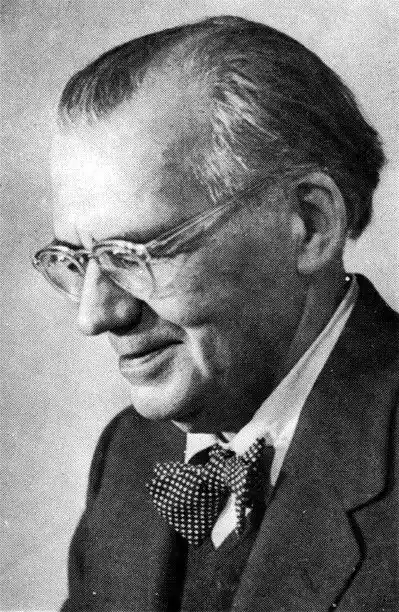
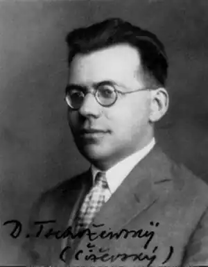
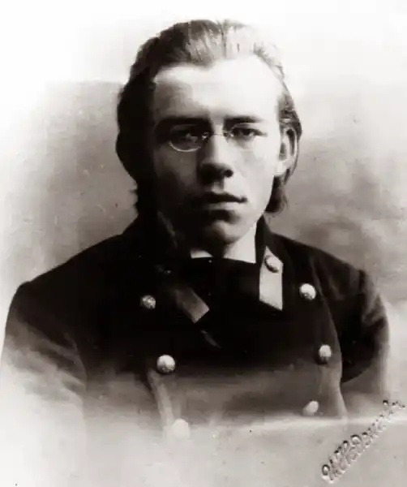
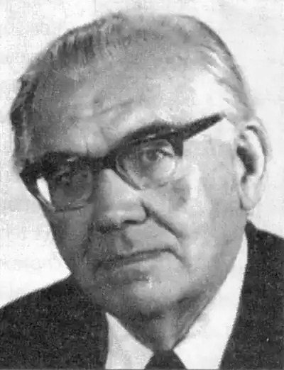

Чижевський Дмитро Iванович
(1894-1977)
учений-енциклопедист, славіст, культуролог, філософ, літературознавець, релігієзнавець, лінгвіст. Народився Чижевський Дмитро Іванович 4 квітня (23 березня) 1894 р. у місті Олександрія Херсонської губернії (тепер — Кіровоградської області). Закінчив Олександрійську чоловічу гімназію (1911). Вищу освіту здобував у Петербурзькому (1911—1913) та Київському (1914—1919) університетах. 1921 року виїхав до Німеччини, де навчався в Гейдельберзькому та Фрейбурзькому університетах. З 1924 року викладає в Українському педагогічному інституті в Празі, а з 1929 — в Українському Вільному університеті в Мюнхені. У 1949—1956 роках працює на посаді професора Гарвардського університету (США), завідує філософським відділом Української Вільної Академії наук у Нью-Йорку. З 1956 року й до кінця життя обіймає посаду професора, керівника Інституту славістики Гейдельберзького університету (ФРН). Помер 18 квітня 1977 року в м. Гейдельберг (ФРН). У російській Енциклопедії Брок-гауза і Ефрона (т. 76,1903 р.) згадується Петро Чижевський, "придворний тенорист", який отримав дворянство 1843 року. Це був предок Д.Чижевського. З роду Чижевських вийшов відомий український діяч, член торговельної місії в Швейцарії уряду УНР Павло Чижевський. Батька Д.Чижевського Івана Костянтиновича, артилерійського офіцера, за участь у народницькому гуртку було виключено з Військової академії, заарештовано й вислано з Петербурга на північ, а пізніше — на батьківщину, в Олександрію. Мати, українська дворянка Марія Єршова, була талановитою художницею. І.Рєпін, якого вона знала особисто, рекомендував їй розшукувати в провінції обдарованих дітей і навчати їх живопису, що вона й робила, поїхавши зі столиці за нареченим. Незважаючи на те, що Іван Костянтинович був членом земської управи, давав приватні уроки, сім’я жила досить скромно. Проте в родині панував культ науки, літератури, живопису. Дітей Дмитра та Марію виховували на ідеалах просвітництва. Підрісши, Дмитро організовує спочатку просвітницькі, а потім і політичні молодіжні гуртки, члени яких збиралися у Чижевських удома. Молодь читала заборонені цензурою книги, а при зустрічах віталися словами "Хай згине дім Романових!". Вісім майбутніх професорів були членами цих зібрань. А Дмитра Чижевського вже тоді однолітки з повагою називали професором. Науки даються йому дуже легко. І, закінчивши 1911 року зі срібною медаллю чоловічу гімназію, він вступає на фізико-математичний факультет Петербурзького університету. Проте клімат північної столиці вихідцеві з півдня не підійшов — він часто хворіє. І 1913 року переїздить до Києва, де стає студентом історико-філологічного факультету університету св. Володимира. За революційну діяльність 1916 року потрапляє до в’язниці. Але жовтневий переворот визволив його. 1919 року Д.Чижевський закінчує університет і отримує диплом першого (тобто найвищого) ступеня. Під час революції брав активну участь у російській фракції Центральної Ради. Представники "революційної влади" заарештували його, і лише щаслива випадковість уберегла Д.Чижевського від розстрілу. Про більшовицький режим Д.Чижевський говорив, що він не знає гуманності і повертає суспіль-ство до варварства. "Дивно, що знаходяться поети, які в своїх віршах прославляють цей бандитизм, мов досягнення поступу", — писав він. 1921 року Д.Чижевський разом із дружиною Лідією через Польщу добирається до Німеччини. Обоє записуються на навчання в німецьких університетах. На прожиття Чижевський заробляє лекціями з латинської мови. 1924 року його запрошено викладати в Українському Високому Педагогічному інституті ім. Драгоманова в Празі. 1929 року він стає професором Українського Вільного університету (Мюнхен). Своїми працями з філософії та літературознавства Д.Чижевський здобуває авторитет у науковому світі. І в 1932 році його запрошують викладати в університеті в Галле (Німеччина), де він здобуває титул доктора філософії. Багатші столичні університети (Віденський, Братиславський) хотіли запросити на той час досить відомого вченого, але гітлерівська адміністрація не дозволила їм цього зробити, оскільки дружина Чижевського "не належала до арійської раси". Під час війни Д.Чижевський живе надзвичайно скромно, недоїдає. Та й після війни американська військова адміністрація не довіряє вченому, підозрюючи його в симпатіях до комуністів. Проте Чижевський бере участь у створенні в Німеччині Вільної Української Академії наук та відновленні Українського Вільного університету. Лише в 1949 році Чижевський зміг виїхати до США, де на нього давно чекали дружина Лідія та донька Тетяна, — Гарвардський університет запрошує його на посаду професора. На той час стан українознавства в цьому провідному американському університеті був вельми убогим, про що Чижевський писав до Європи своїм друзям: "В бібліотеці є тільки "Кобзар" Шевченка в російському перекладі". 1956 року Д.Чижевському пропонують очолити інститут славістики Гейдельберзького університету, на що він охоче погоджується. Фактично він і створив цей інститут, оскільки до приходу вченого той існував лише номінально. Ця робота стала справою його життя. "Він віддав інститутові всю душу, інститут був для нього домом, дружиною і дитиною", — писав його сучасник поляк А.Вінценз. У рекордний строк бібліотека інституту зібрала понад 30 тисяч томів. Інколи вчений доводив університетську касу до відчаю, закуповуючи книги на суми, що набагато перевищували бюджет. Проте університет поставився до вченого дріб’язково, як, власне, було прийнято у ті часи. Мізерна пенсія змушувала його викладати також в інших університетах. Тим часом науковий світ високо цінує здобутки вченого. На відзначення його 60-та 70-річчя виходять збірники статей різних авторів. На Батьківщині ж про нього згадують лише як про "буржуазного націоналіста". Після виходу в світ 1956 року його фундаментальної праці "Історія української літератури" академік О.Білецький, який очолював тоді Інститут літератури АН УРСР, писав, що ця "Історія..." є такою ж диверсією, як повітряні розвідувальні кулі, що начебто запускаються Заходом на територію Союзу РСР, чи брехня "Голосу Америки". Своє ставлення до "совітів" Д.Чижевський продемонстрував на конгресі славістів у Празі (1968 р.). Чехи та їхні "наставники" із СРСР намагалися створити атмосферу розрядки, запросивши вчених зі Сходу та із Заходу. Чижевський мав зробити доповідь про східносло-в’янське бароко (тема, на яку в СРСР існувало табу). Він підійшов до кафедри, привітав присутніх у залі, а потім російською мовою повідомив, що на знак протесту проти замовчування його імені і праць у Радянському Союзі він не читатиме своєї доповіді. Був міжнародний скандал, адже Чижевського вчені-славісти Заходу вважали вже тоді "патріархом" чи "Нестором славістики". А вже через тиждень у Празі були радянські танки. Чехи говорили про Чижевського із захопленням: тільки він знав, як треба розмовляти з росіянами. Сучасники Чижевського визнавали, що він був далекий від будь-якого шовінізму. Лекції часто читав російською мовою. Проте ніколи й не приховував, що він не росіянин, а українець, навіть підкреслював це. А в своїх працях він завжди наголошував, що староруська література є літературою Київської Русі, а отже є українською. Також учений завжди намагався довести вищість і пріоритет української літератури над російською аж до твердження, що російської літератури не існує, існують тільки російські письменники. У 1976 році вчений тяжко захворів. Але до лікарні не захотів переходити, щоб не розлучатися з книгами й рукописами. З Америки викликали дружину й дочку. Вони згадували, що до останніх днів хворий жив науковими інтересами. 18 квітня 1977 року Д.Чижевського не стало. Уже згадуваний А.Вінценз писав: "Зі смертю Чижевського зійшов зі сцени один з найвидатніших славістів останнього тридцятиліття ХХ століття, довголітній "патріярх" німецької славістики, останній її полігістор і один з останніх представників ліберальної інтелігенції колишньої російської імперії". Наукова спадщина Д.Чижевського ще дасть роботу багатьом дослідникам. Лише зі славістики він опублікував понад 900 праць. Перші ж його наукові праці було присвячено історії філософії переважно слов’янських країн. Фахівці вважають класичним твором російської філософської історіографії його монографію "Гегель у Росії" (1924). Її було опубліковано, коли вченому виповнилося лише 30 років. Далі Чижевський видав конспект лекцій із логіки (1924), хрестоматію з грецької філософії (1927), історіографічну працю "Філософія на Україні" (1926, 1929), монографію "Сковорода" (1931), "Нариси історії філософії на Україні" (1931). Паралельно з поглибленням філософських досліджень ("Філософія Г.С.Сковороди", 1934, та інші праці) він все більше вдається до літературознавства. У 1942 році виходять друком "Історія української літератури" (давній період), у 1948 — "Історія давньоруської літератури: київська епоха" (німецькою мовою). Пізніше —"Порівняльний на-рис слов’янських літератур" (1952), "Про романтизм у слов’янських літературах" (1957), "Історія руської літератури до епохи бароко" (1960, англійською), "Порівняльна історія слов’янських літератур" (1971). Однією з найгрунтовніших праць фахівці називають "Історію української літератури (від початків до доби реалізму)" (1956), де досліджується період від названої вченим "доісторичної доби" (обрядові піс-ні, плачі, закляття і т. п.) аж до кінця романтизму (Т.Шевченко та інші) і де вчений робить висновок, що українська література є неповною. У передмові до цієї праці, виданої в Україні лише 1994 року, доктор філологічних наук професор М.Наєнко пише: "...без його праць українське літературознавство було й залишається не просто "неповним", а злиденним. Як, до речі, й українська філософська думка ХХ століття... В часи, коли Україна стала незалежною, вона особливо має пишатися тим, що і в часи неволі не давали заснути тій думці такі сподвижники, як Д.Чижевський". "Д.Чижевський... — зірка світової славістики, постать, якою пишалася б кожна цивілізована нація... Тому повернення Чижевського сьогодні — справа реабілітації нашої національної гідності, справа відновлення заслуженого престижу української духовної культури", — писали вже в 1990 році українські вчені (М.Попович, О.Забужко, Ю.Прилюк та інші) в "Літературній Україні". В Україні лише починають вивчати спадщину Д.Чижевського, діаспора ж давно дала їй найвищу оцінку. Відомий вчений Осип Данко писав: "Якби хтось зробив серйозну спробу дослідити, який вклад українці за кордоном внесли у світову науку, то незалежно від того, чи цей вклад — у порівнянні до загальної скількости українців за кордоном — виявився б більший чи менший, немає сумніву, що найвизначніше місце серед невеликої групи українських вчених, що такий вклад зробили, належало б Дмитрові Чижевському".